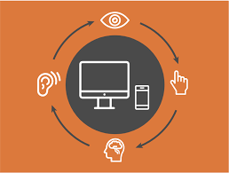

Welcome
Universal design is about building interfaces that work for as many people as possible by default. It’s not an afterthought, a toggle, or an add-on—it’s the baseline. This site is built mobile-first with semantic HTML, responsive CSS Grid + Flexbox, clear focus styles, and keyboard-first navigation so the code practices match the message.
